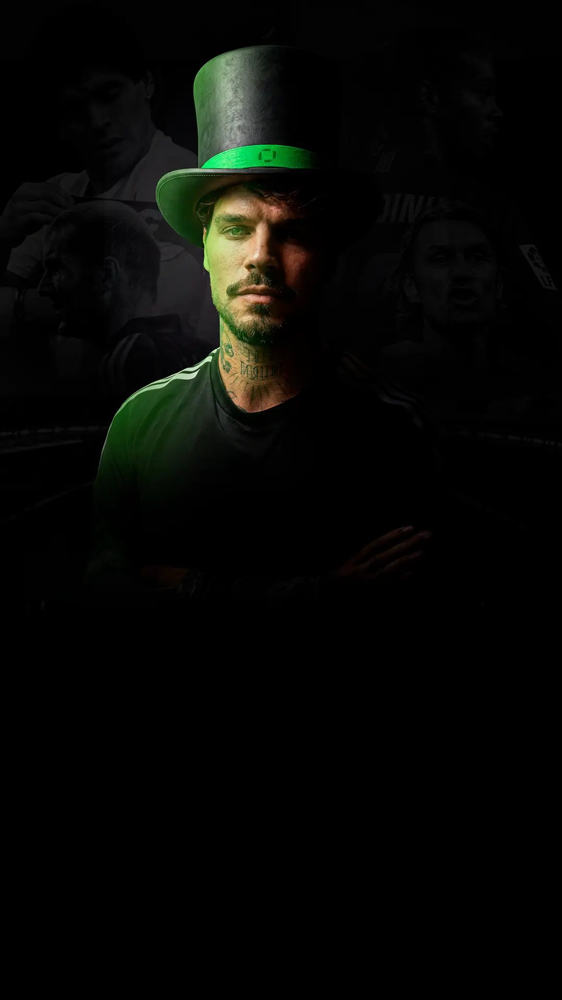
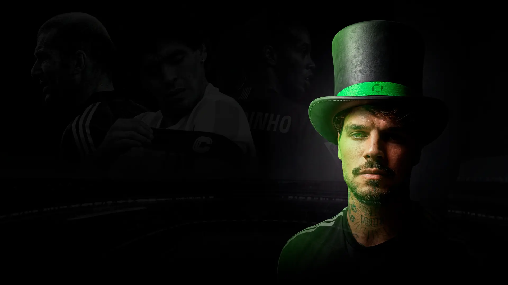

Análise de jogo todo dia, resenha de verdade e a leitura do Mago direto no seu Telegram. De graça, sem pegadinha. É só entrar.
QUERO ENTRAR+18 • Aposte com responsabilidade
Eu boto a mão na massa: leitura dos jogos, dos mercados e das odds antes da bola rolar. Tu não entra no escuro.
Mais de 60 mil cabeças trocando ideia ao vivo comigo. Aqui aposta não é solidão, é comunidade.
Acompanho os jogos junto com tu, com leitura ao vivo e reação em tempo real.
Não sou tipster de ontem. É estrada, histórico e cara pra mostrar, sem me esconder atrás de print.
Me chamam de Cabreloa, o Mago. Eu não cheguei ontem não, mano. Desde 2018 eu vivo disso: estudo jogo, leio o mercado e divido tudo com a galera, no olho, sem firula de guru.
Minha ideia sempre foi simples: aposta boa não é chute, é leitura. E leitura fica melhor em grupo, na resenha, com gente que entende e troca ideia de verdade.
Foi assim que eu juntei uma das maiores comunidades de aposta esportiva do Brasil, entre Telegram e redes.
Aqui eu não te prometo ficar rico. Eu te entrego análise honesta, comunidade ativa e a minha cara todo santo dia. O resto é magia. 🎩
Pra manter o nível, eu controlo a entrada. Quem perder a chamada dessa semana, espera a próxima.